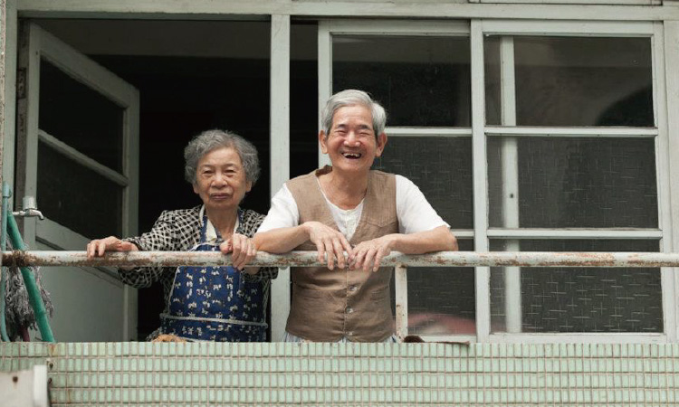
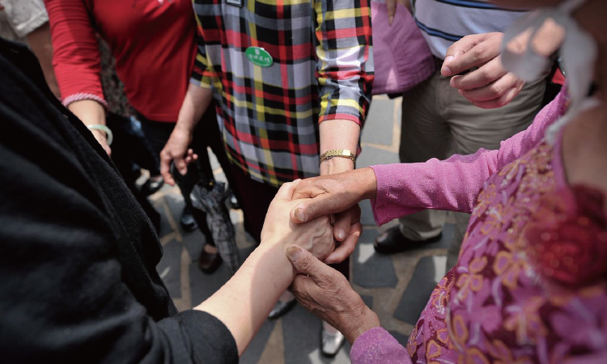
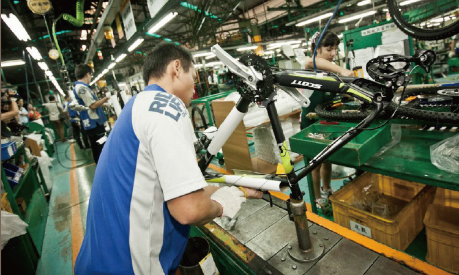
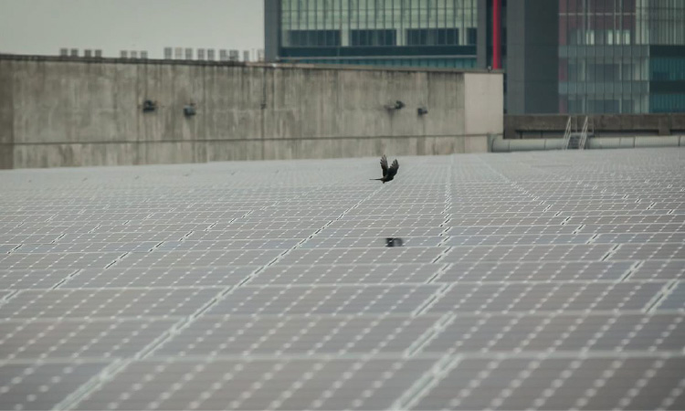
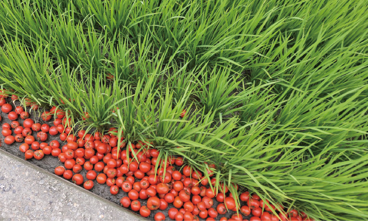

建黨多年來，民進黨歷經多任黨主席，在不同的年代繼往開來，也構成民進黨在每個階段不同的歷史圖像。
曲折的進程，一路走來充滿豐富與艱辛，始終不變的是擁抱人民、與人民站在一起的信念，還有捍衛台灣這塊土地的堅持。
曲折的進程，一路走來充滿豐富與艱辛，始終不變的是擁抱人民、與人民站在一起的信念，還有捍衛台灣這塊土地的堅持。
深化。民主價值
維護核心價值
民主是台灣最珍貴的資產，也是我們與世界連結的重要基礎，更是確保台灣安全、穩定及永續發展的核心關鍵。
持續推動改革，使台灣的民主制度更能反應民意、確保民主。同時，我們也將擴大社會參與，鞏固及深化民主，落實直接民主，確保民主憲政的健全運作，提昇社會對民主的信任。
持續推動改革，使台灣的民主制度更能反應民意、確保民主。同時，我們也將擴大社會參與，鞏固及深化民主，落實直接民主，確保民主憲政的健全運作，提昇社會對民主的信任。
公平。社會福利
照顧人民是政府的責任

攝影/林政億
追求公平正義、扶助社會弱勢，是民進黨長久堅持的理念；重視大眾福祉，維護人民權益，則是民進黨最鮮明的標記。
以社會公平為基礎，推動多層面改革，致力達成分配正義。建構完整的社會福利體系，因應全球化之下台灣經濟、社會結構的快速變遷，保障全體國民的基本生存權。
以社會公平為基礎，推動多層面改革，致力達成分配正義。建構完整的社會福利體系，因應全球化之下台灣經濟、社會結構的快速變遷，保障全體國民的基本生存權。
守護。台灣主權
對台灣土地與人民的許諾

鞏固主權、深化民主、強化台灣的自主性，維繫兩岸關係的和平穩定與發展,以民主、公義價值連結世界，是民主進步黨一貫的立場與主張。
面對複雜多變的國際與兩岸情勢，必須建構創新、平衡、多元的經貿戰略，建立對等互利、和平共榮、可長可久的兩岸互動架構，才有助於國家的永續發展與兩岸的繁榮穩定。
面對複雜多變的國際與兩岸情勢，必須建構創新、平衡、多元的經貿戰略，建立對等互利、和平共榮、可長可久的兩岸互動架構，才有助於國家的永續發展與兩岸的繁榮穩定。
創造。亞太新定位
充分發揮戰略價值與優勢

攝影/林政億
台灣應以多元文化與民主價值作為資產，在區域及國際事務上，和其他國家共同合作，共同維持區域的和平與穩定，善盡台灣做為國際社會一份子的責任。
面對全球情勢及經濟版圖快速重整，台灣必須建構全新的發展戰略、強化核心競爭力、與主要政經夥伴的連結，擴大台灣對亞太地區乃至全世界的重要價值。
面對全球情勢及經濟版圖快速重整，台灣必須建構全新的發展戰略、強化核心競爭力、與主要政經夥伴的連結，擴大台灣對亞太地區乃至全世界的重要價值。
永續。創新
建構綠色成長典範

攝影/林政億
以「永續發展」為政策擬定核心，發展兼顧環境保護、經濟發展、能源安全、國土防災減災及社會生活的新型態政策。
結合發展綠能產業、新型農業、觀光及文創產業，促進產業轉型，逐步取代高污染、高風險產業，加強地方特色。讓我們的下一代，依舊可以擁有這個美麗的台灣。
結合發展綠能產業、新型農業、觀光及文創產業，促進產業轉型，逐步取代高污染、高風險產業，加強地方特色。讓我們的下一代，依舊可以擁有這個美麗的台灣。
啟動。社會經濟新模式
多元發展創造幸福

台灣的發展已經進入下一個階段，台灣需要揚棄以GDP成長為唯一標準的經濟模式，在追求經濟成長的同時，兼顧就業、薪資成長、區域平衡、所得分配、世代正義、生活品質及生態環境保護等多元目標。
未來應該將創新元素導入經濟發展，發揮台灣優勢，以提升經濟層次及國際競爭力，同時達到產業升級及轉型，創造幸福台灣。
未來應該將創新元素導入經濟發展，發揮台灣優勢，以提升經濟層次及國際競爭力，同時達到產業升級及轉型，創造幸福台灣。
建我們堅持本土進步價值，
在人民的點滴支持下茁壯成長。
堅持改革，引領台灣不斷前進，
是我們始終不變的堅持。
在人民的點滴支持下茁壯成長。
堅持改革，引領台灣不斷前進，
是我們始終不變的堅持。
過去，民進黨曾帶領台灣，
衝破威權，走向民主。
今天，改變，
再一次成為人民的共同企盼。
民進黨定回應期待，
「從地方開始，贏回台灣」。
衝破威權，走向民主。
今天，改變，
再一次成為人民的共同企盼。
民進黨定回應期待，
「從地方開始，贏回台灣」。
我們要人權的台灣；實現轉型正義，
推動憲政改革，讓人民不分性別
年齡、族群、信仰，
均受到公平對待，讓民主再深化。
推動憲政改革，讓人民不分性別
年齡、族群、信仰，
均受到公平對待，讓民主再深化。
我們要信任的台灣；
開啟社會全面對話，
結合公民社會力量，
我們要扛起責任，
落實世代正義，
重建人民對政府的信心。
開啟社會全面對話，
結合公民社會力量，
我們要扛起責任，
落實世代正義，
重建人民對政府的信心。
我們要幸福的台灣；
找回經濟動能，
解決貧富差距擴大的問題，
健全社會福利制度，
讓人民享有幸福而優質的生活。
找回經濟動能，
解決貧富差距擴大的問題，
健全社會福利制度，
讓人民享有幸福而優質的生活。
改革的理想道路未曾輕鬆，
但我們始終腳步不停，
步伐穩健，
因為代代的民進黨人都有相同信念：
只要堅持理想，
只要改革初衷不變，
只要與人民並肩同行，
我們終究能克服困難，
為下一代創造美好未來。
但我們始終腳步不停，
步伐穩健，
因為代代的民進黨人都有相同信念：
只要堅持理想，
只要改革初衷不變，
只要與人民並肩同行，
我們終究能克服困難，
為下一代創造美好未來。